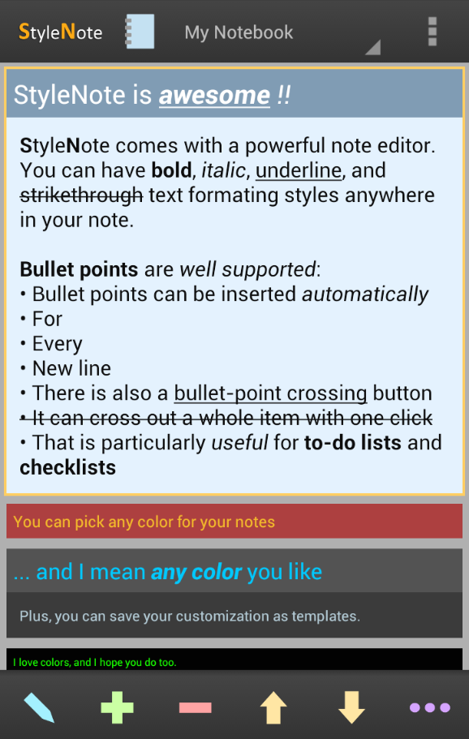
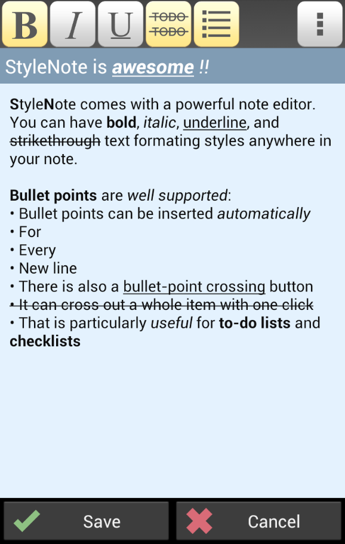
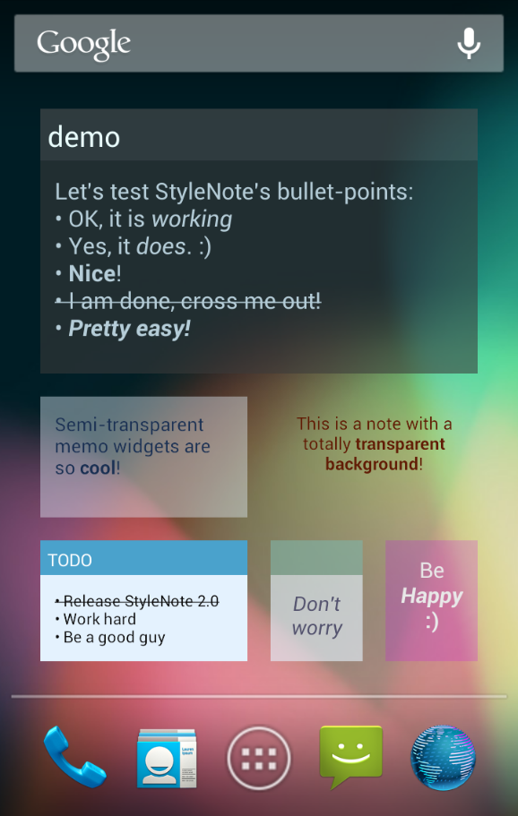
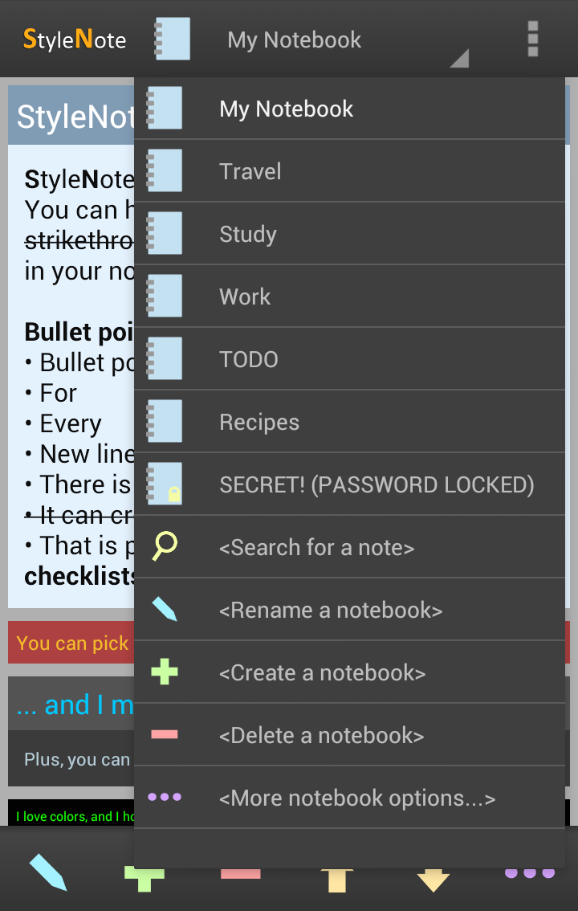
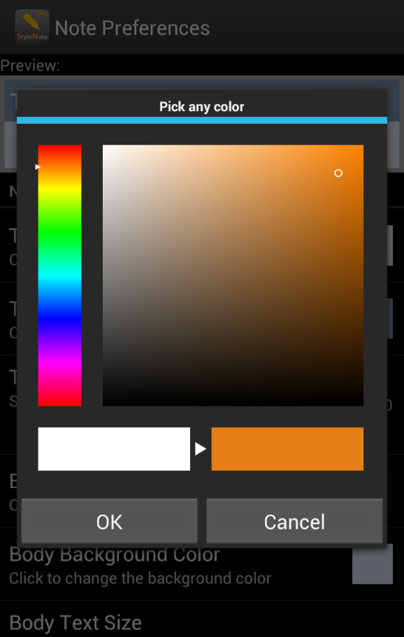

StyleNote 2.0 has been released!
As a major update, there are many new features and improvements. The main interface has also been redesigned.





Better backup options, note search function, bullet point support, style templates, and dropbox cloud storage support are the key additions in this update. I am too tired right now to describe the new features one by one, but at the end of this blog post you can find the complete changelog.
{kind=link}
{kind=link}
{kind=link}
{kind=link}
{kind=link}
Current users may check out the new instructions in the settings screen to learn about the new bullet point support. The settings screen can now be accessed from the main menu which can be opened via the 3-dots icon at the top-right corner of the app. Other new features are (hopefully) pretty straightforward to use.
If you encounter any problem, please let me know. You may also check out the FAQ and ask questions in our user forums.
Enjoy! :)
Version 2.0.0:
- New feature: Custom-scope note searching
- New feature: Notes & settings upload/download to/from your own Dropbox account for cloud backup or note sync among different devices
- New feature: Notes & settings export to HTML files which can be directly viewed on any computer
- New feature: Notes & settings import from exported HTML files
- New feature: Option to encrypt the exported files as .snb2 encrypted backup files
- New feature: Regular auto-backup to your SD card (Pro users can use Dropbox for auto-backup and customize the frequency)
- New feature: Bullet point list support which inserts bullet points automatically
- New feature: Bullet point cross-out button that can cross out the whole line of a bullet point with one click
- New feature: Style Templates for saving/loading your note color and size customization
- New feature: Widget option for center-aligning the note text on a widget
- New feature: Now you can specify a set of secret question and answer for password resetting in the future
- New feature: Now you can click on URLs (links) on the note list and launch the web browser
- New feature: Now you can send/share text to StyleNote from other programs
- Redesigned the main interface
- Many other improvements and minor changes
- StyleNote now requires Android 2.1 or newer (Android 1.5 and 1.6 can still use StyleNote 1.6.3 which can be downloaded from nullium.com)